|
|
| fishes text index | photo index |
| Phylum Chordata > Subphylum Vertebrata > fishes |
| Sharks Class Elasmobranchii, Infraclass Selachii Updated Oct 2020
Where seen? Sharks are sometimes seen by divers in our waters, and during intertidal trips to Singapore's southern submerged reefs. What are sharks? Sharks belong to Infraclass Selachii. And to the Subclass Elasmobranchii which includes the stingrays. Features: These streamlined predators are torpedo shaped, usually with 8 fins. The skin is rough and sand-papery and have properties that make them efficient swimmers. Sharks breathe through a row of gills behind the eyes. Sharks have teeth, lots of them. Sharks that feed on snails and crustaceans have flattened teeth for crushing, those that hunt fish have needle-like teeth. Only those that feed on larger prey triangular serrated knife-like teeth for cutting. Like rays, the skeleton of sharks are made of flexible cartilage. If you want to know how cartilage feels like, your nose and ears are made of cartilage! |
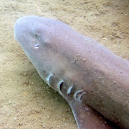 Bamboo shark spotted diving. Pulau Hantu, Feb 07 Photo shared by Toh Chay Hoon on her blog. |
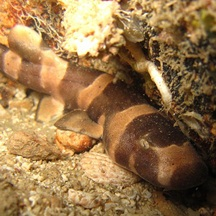 The Bamboo shark is often seen by divers at Pulau Hantu. Pulau Hantu, Jun 2011 Photo shared on the Hantu Blog. |
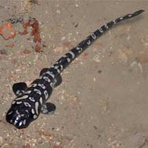 Baby bamboo shark! Beting Bronok, Jun 2010 Photo shared by Toh Chay Hoon on her blog |
| Among the sharks commonly seen on our shores are: Bamboo sharks (Family Hemiscylliidae): sometimes seen by divers at Pulau Hantu. Black tipped reef sharks (Carcharhinus melanopterus): sometimes encountered during surveys of the Southern submerged reefs at low tide. These sharks appear to hunt fish in low water, thus staying in the shallows at moderate tides or coming in with the tide. Records (see below) suggest a wide variety of shark species have been seen in Singapore in the past. |
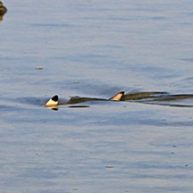 Sharks rushing in with the incoming tide. Cyrene Reef, Jul 12 Photo shared by Russel Low on facebook. |
||
| Sharks in shallow waters: Sharks on our reefy shores often rush in as the tide turns! They've been patiently waiting in deeper waters at low tide, and move in at the first opportunity to hunt for small fishes. They are in such a hurry that their dorsal fins stick out above the shallow water. They don't hunt people, but it's best for us to stay out of the water during the turn of the tide on a reef flat. |
| Shark babies: In most shark species, baby sharks develop inside the mother who eventually 'gives birth' to live babies. Other sharks may lay eggs in a leathery case attached to a hard surface. When the baby shark emerges, the empty purse-like case may wash ashore. Sharks produce few young which take a longer time to mature compared to other fish. Thus shark populations reproduce slowly and can be seriously affected by overharvesting. |
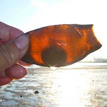 Shark egg capsule? Washed ashore. Sentosa, Jul 11 |
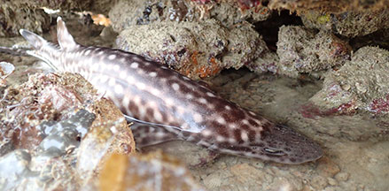 Coral cat-shark sheltering under coral rubble during low tide. Terumbu Bemban, Jul 18 Photo shared by Lisa Lim on facebook. |
| Shark friends: The remora aka 'sharksucker' is often seen stuck onto sharks as well as other large marine animals, and even boats. The first dorsal fin is modificed into a sucker with slats that open and close to create suction. The remora can swim well on its own. |
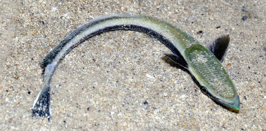 Live Remora seen in a lagoon. Tanah Merah Ferry Terminal, Nov 25 Photo shared by Loh Kok Sheng on facebook. |
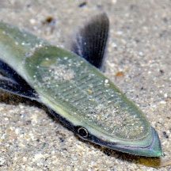 Tanah Merah Ferry Terminal, Nov 25 Photo shared by Loh Kok Sheng on facebook. |
| Status and threats: In Singapore, our sharks are threatened by over fishing by recreational fishermen, trapped in nets or traps. None of the shark species recorded for Singapore, however, are listed as threatened in the latest Red Data Book. |
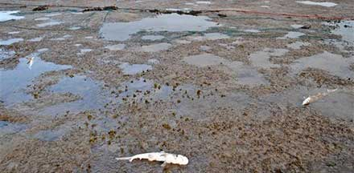 Three dead sharks in front of fishing net. Pulau Semakau, Aug 13 Photo shared by Loh Kok Sheng on his blog. |
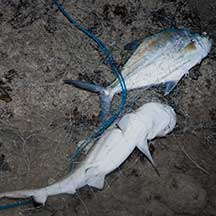 Shark trapped in fishing net. Cyrene, Jul 10 |
|
| Sharks on Singapore shores |
On wildsingapore
flickr
|
| Other sightings on Singapore shores |
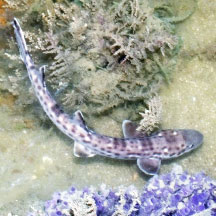 Beting Bronok, Jun 18 Photo shared by Loh Kok Sheng on facebook. |
||
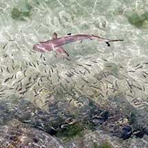 Black tipped reef shark outside the seawall. Sisters Island, Oct 20 Photo shared by Richard Kuah on facebook. |
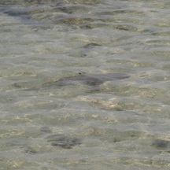 Black tipped reef shark with the incoming tide. Cyrene Reef, Aug 12 Photo shared by Jocelyn Sze on her blog |
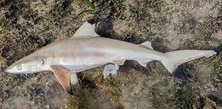 Found dead at low tide. Pulau Semakau South, Oct 20 Photo shared by Vincent Choo on facebook. |
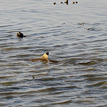 Beting Bemban Besar, Aug 12 Photo shared by Russel Low on facebook. |
| Juvenile Bamboo Shark (Chiloscyllium sp.) from Loh Kok Sheng on Vimeo. |
| Sharks
recorded for Singapore from Wee Y.C. and Peter K. L. Ng. 1994. A First Look at Biodiversity in Singapore. *from Lim, Kelvin K. P. & Jeffrey K. Y. Low, 1998. A Guide to the Common Marine Fishes of Singapore. Singapore Science Centre **from WORMS +Other additions (Singapore Biodiversity Records, etc)
|
Links
|